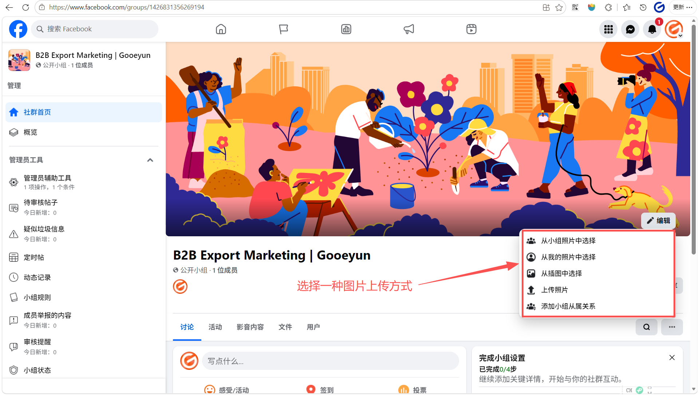

介绍
Facebook 小组（Groups）是一个让具有共同兴趣的人们聚集在一起交流、分享和讨论特定话题的平台。对于 B2B 企业而言，小组是建立行业社群、展示专业知识并与潜在客户进行深度互动的核心空间。
Facebook 小组的主要特点和对 B2B 企业的价值
1. 建立深度连接的社区 - 互动的中心：与公共主页（Page）主要由官方发布信息不同，社群更强调成员之间的双向讨论。买家可以在这里提问，而您可以作为专家提供解答。 - 信任的孵化器：在 B2B 贸易中，信任至关重要。社群提供了一个非正式的场景，让潜在客户通过长期的内容分享和互动，对您的工厂和产品产生深度认可。 - 精准的聚集地：社群通常围绕特定主题建立（如“全球紧固件采购”或“注塑模具技术交流”），加入成员的意向通常比普通浏览者更精准。 2. 灵活的隐私设置 - 公开社群 (Public)：任何人都能在 Facebook 搜索到该社群，并看到其中的成员和帖子。这非常适合 B2B 企业初期吸引流量和扩大知名度。 - 私密社群 (Private)：只有成员才能看到帖子内容。您可以设置为“可见”（所有人都能搜到但需申请加入）或“隐藏”（只有受邀者能找到）。这适合作为您的 VIP 客户服务群或核心代理商交流群。 3. 强大的管理工具 - 以主页身份加入：您可以指导客户以公共主页身份创建或加入小组，从而统一品牌形象。 - 入群审核：通过设置入群问题，企业可以筛选掉无关人员，确保社群成员都是高质量的潜在客户或合作伙伴。 4. 数据洞察 - 小组成效分析：如果小组人数超过 50 人，管理员可以查看成员活跃度、热门帖子等数据，帮助优化运营策略。
小组定位和目标成员
小组定位（Positioning） 您可以根据业务目标，从以下三个方向中选择一个作为核心定位： - 行业知识分享型：定位为行业资讯和技术交流中心。例如，如果您生产光伏组件，小组可以定位为“全球绿色能源技术与市场趋势交流站”。这种定位最容易吸引潜在买家，因为他们能在这里获得有价值的信息。 - 产品应用与售后支持型：定位为现有客户和潜在客户的技术支持中心。提供产品安装视频、常见问题解答（FAQ）和在线技术咨询。这能显著提升客户对您工厂专业度的认可。 - 采购与供应链撮合型：定位为特定品类的采购信息集散地。例如“中国高品质紧固件采购联盟”。这种定位非常直接，吸引的是有明确采购意向的批发商和贸易商。 目标成员（Target Members） 您的目标成员应是那些在采购决策链条中具有影响力的人： - 海外批发商与分销商：他们是您最核心的买家，关注产品质量、价格稳定性和供货能力。 - 终端企业采购经理：直接使用您产品的企业负责人，他们更关注产品的技术规格和售后保障。 - 行业专家与意见领袖：邀请他们加入可以增加社群的权威性，并带动更多成员加入。 - 现有老客户：他们是社群的“种子成员”，通过他们的好评和互动，可以帮助您转化新成员
公共主页与小组有什么区别 什么企业适合建立小组 哪些情况下不建议建立小组
步骤
您可以直接在 Facebook 个人账号或公共主页的管理界面创建社群。建议您以公共主页的身份创建并关联社群，这样可以更好地展示您的企业品牌。
登录公共主页，点击“小组”

点击“新建小组”

填入小组名称，隐私设置为“公开”，点击创建后，您的小组就正式建立了
 小组名称设置建议
- 包含核心关键词：确保名称中包含您的产品或行业词（如“LED Lighting”、“CNC Machining”），这能帮助海外买家在搜索时找到您。
- 突出价值或地区：可以加入“Wholesale”、“Sourcing”、“China Factory”或“Global Forum”等词汇，明确小组的商业属性。
- 示例：
- 行业交流类：Global Solar Energy Technology & Market Trends
- 采购供应类：High-Quality Fasteners Sourcing from China Factory
- 品牌官方类：[您的品牌名] Official Customer Support & News
公开 (Public) vs 私密 (Private) 如何选择
- 初期建议选“公开”：
- 优势：任何人都能搜到小组并看到帖子内容。这能最大化您的产品曝光，降低潜在买家的进入门槛。
- 适用场景：品牌推广、行业知识分享、吸引新客户。
- 成熟期或特殊用途选“私密”：
- 优势：只有成员能看到内容，且您可以设置“可见”（能搜到但需申请）或“隐藏”（搜不到）。这能营造专属感和安全性。
- 适用场景：VIP 客户服务、核心代理商培训、发布敏感的价格表或技术专利。
重要提示：您可以将隐私设置从“公开”更改为“私密”，但一旦改为“私密”，为了保护成员隐私，==通常无法再改回“公开”==。
小组名称设置建议
- 包含核心关键词：确保名称中包含您的产品或行业词（如“LED Lighting”、“CNC Machining”），这能帮助海外买家在搜索时找到您。
- 突出价值或地区：可以加入“Wholesale”、“Sourcing”、“China Factory”或“Global Forum”等词汇，明确小组的商业属性。
- 示例：
- 行业交流类：Global Solar Energy Technology & Market Trends
- 采购供应类：High-Quality Fasteners Sourcing from China Factory
- 品牌官方类：[您的品牌名] Official Customer Support & News
公开 (Public) vs 私密 (Private) 如何选择
- 初期建议选“公开”：
- 优势：任何人都能搜到小组并看到帖子内容。这能最大化您的产品曝光，降低潜在买家的进入门槛。
- 适用场景：品牌推广、行业知识分享、吸引新客户。
- 成熟期或特殊用途选“私密”：
- 优势：只有成员能看到内容，且您可以设置“可见”（能搜到但需申请）或“隐藏”（搜不到）。这能营造专属感和安全性。
- 适用场景：VIP 客户服务、核心代理商培训、发布敏感的价格表或技术专利。
重要提示：您可以将隐私设置从“公开”更改为“私密”，但一旦改为“私密”，为了保护成员隐私，==通常无法再改回“公开”==。
完善小组关键设置
上传封面照片
这是买家进群后的第一印象。建议上传工厂实景、生产线或核心产品的精美合集，展示您的供应实力。
点击“编辑”

选择一种图片上传方式

封面照片的设计要求与建议 - 视觉中心化：由于封面图在不同设备上的裁剪方式不同，请避免在图片的边缘放置重要文字或信息。 - 展示供应实力：对于 B2B 企业，建议使用高质量的工厂全景图、先进的自动化生产线或核心产品的高清合集。这能让海外买家进群的第一秒就感受到您的规模和专业度。 - 保持简洁专业：避免使用过于杂乱的拼图。一张干净、明亮且具有工业美感的照片通常比密密麻麻的文字更有说服力。 - 定期更新：如果您有新的产品线投产或参加了大型国际展会，可以更新封面图来展示企业的最新动态。编写社群说明
在左侧的 管理工具 菜单中，向下滚动并点击 “小组设置”

找到 设置小组 板块下的 “名称和说明”，点击右侧的 编辑（铅笔图标

在 说明 文本框中输入您编写好的内容，完成后点击 保存。
 社群说明的编写要点
- 前两行是核心：在手机端，说明的前两行会直接显示，其余部分会被折叠。请务必在前两行说清楚小组的核心价值（例如：Direct factory sourcing for high-quality LED products）。
- 明确成员身份：清晰界定谁应该加入（如：Wholesalers, distributors, and sourcing agents），这能增加潜在客户的归属感。
- 列出具体收益：使用项目符号列出加入后的好处，如“每周报价单更新”、“免费样品申请机会”或“24小时技术答疑”。
- 包含联系方式：虽然小组内可以互动，但在说明中留下您的官方业务邮箱或 WhatsApp，能方便急需采购的买家直接联系您。
编写时的注意事项
- 避免纯硬广语言：不要只写“我们是最好的工厂，买我们的产品”。应写成“分享行业知识，助力您的业务增长”，以建立合作伙伴的姿态。
- 语言地道专业：避免使用中式英语。
- 嵌入搜索关键词：在说明中自然包含您的产品词（如 "Fastener Supplier", "Custom Machining"），这能提高小组在 Facebook 搜索结果中的排名。
- 明确小组规则：简要提到“禁止垃圾广告”，这能让买家觉得这是一个高质量、受管理的专业环境。
社群说明的编写要点
- 前两行是核心：在手机端，说明的前两行会直接显示，其余部分会被折叠。请务必在前两行说清楚小组的核心价值（例如：Direct factory sourcing for high-quality LED products）。
- 明确成员身份：清晰界定谁应该加入（如：Wholesalers, distributors, and sourcing agents），这能增加潜在客户的归属感。
- 列出具体收益：使用项目符号列出加入后的好处，如“每周报价单更新”、“免费样品申请机会”或“24小时技术答疑”。
- 包含联系方式：虽然小组内可以互动，但在说明中留下您的官方业务邮箱或 WhatsApp，能方便急需采购的买家直接联系您。
编写时的注意事项
- 避免纯硬广语言：不要只写“我们是最好的工厂，买我们的产品”。应写成“分享行业知识，助力您的业务增长”，以建立合作伙伴的姿态。
- 语言地道专业：避免使用中式英语。
- 嵌入搜索关键词：在说明中自然包含您的产品词（如 "Fastener Supplier", "Custom Machining"），这能提高小组在 Facebook 搜索结果中的排名。
- 明确小组规则：简要提到“禁止垃圾广告”，这能让买家觉得这是一个高质量、受管理的专业环境。